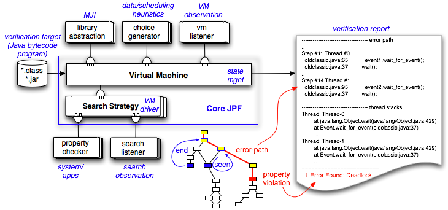

The answer used to be simple: "JPF is an explicit state software model checker for Java bytecode". Today, JPF is a swiss army knife for all sort of runtime based verification purposes.
If you are not familiar with formal methods, this basically means JPF is a Java virtual machine that executes your program not just once (like a normal VM), but theoretically in all possible ways, checking for property violations like deadlocks or unhandled exceptions along all potential execution paths. If it finds an error, JPF reports the whole execution that leads to it. Unlike a normal debugger, JPF keeps track of every step how it got to the defect.

Figure 1: JPF model of operation
If that sounds too good to be true, it probably is - with growing application size, software model checking faces serious scalability challenges. JPF does not shy away from this. Our answer to scalability is to increase JPF's flexibility to be adapted to the needs of a particular application. Albeit useful in its standard form of distribution, you can think of JPF as a general framework for a variety of Java bytecode runtime verification techniques, providing a rich set of configuration and abstraction mechanisms.